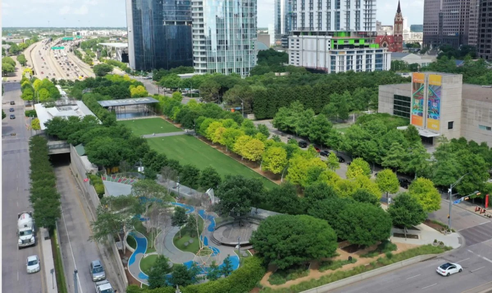
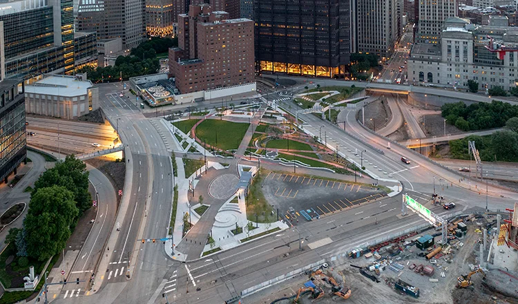
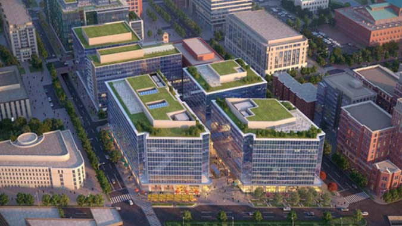
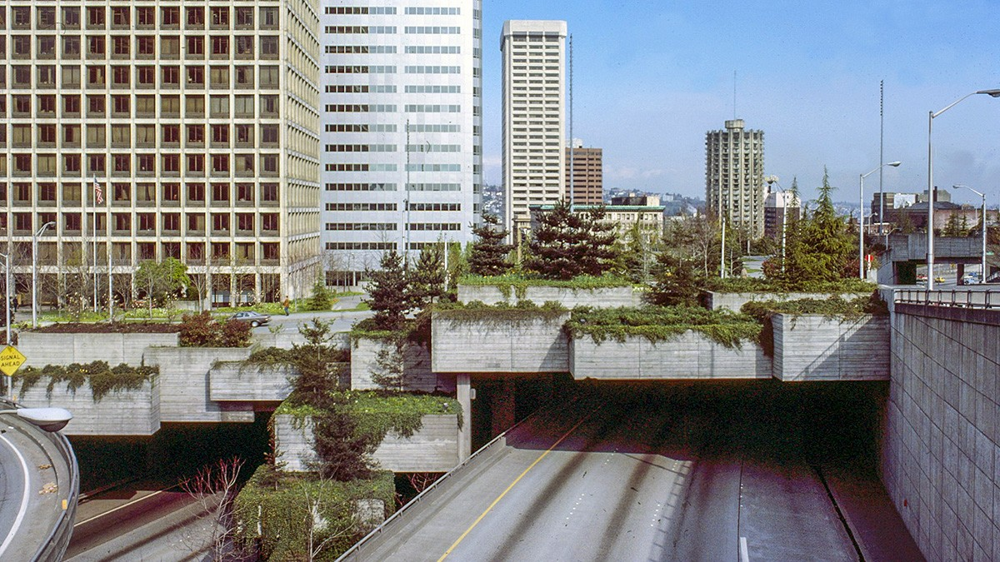
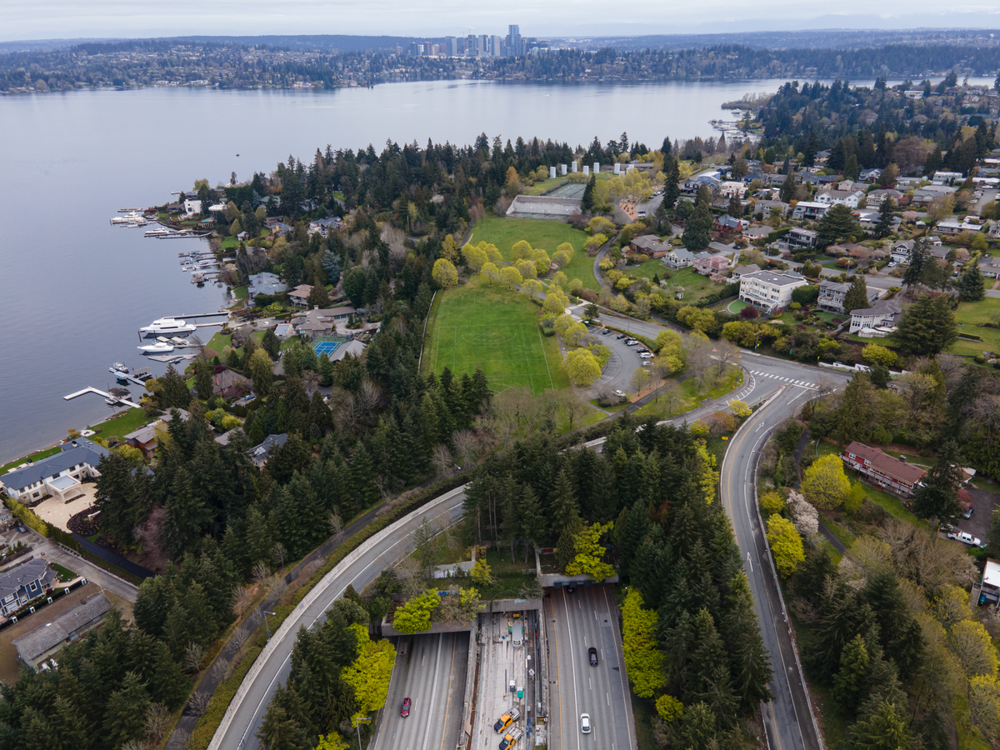

Klyde Warren Park, Dallas, Texas
Klyde Warren Park, constructed over the recessed Woodall Rodgers Freeway, is a 5.2-acre park connecting uptown and downtown Dallas. It offers green spaces, dining, and numerous free programs annually, revitalizing the urban area and reconnecting previously divided neighborhoods.
I-579 Urban Open Space Cap, Pittsburgh, Pennsylvania
Completed in 2021, this project reconnects the historic Hill District to downtown Pittsburgh. It features a tree-lined park with pedestrian access, addressing the displacement caused by the original interstate construction in the 1950s.
Capitol Crossing, Washington, D.C.
Spanning a portion of Interstate 395, this project includes office space, retail, and public areas. It re-establishes the street grid and improves pedestrian connectivity, integrating well with Washington, D.C.'s urban environment.
Freeway Park, Seattle, Washington
One of the earliest examples, Freeway Park was built over Interstate 5 and opened in 1976. It offers much-needed green space in downtown Seattle and has served as a model for other cities considering similar projects.
Aubrey Davis Park, Mercer Island, Washington
Constructed over Interstate 90, this park provides recreational spaces and connects different parts of Mercer Island, demonstrating how highway caps can integrate natural spaces within urban settings.
